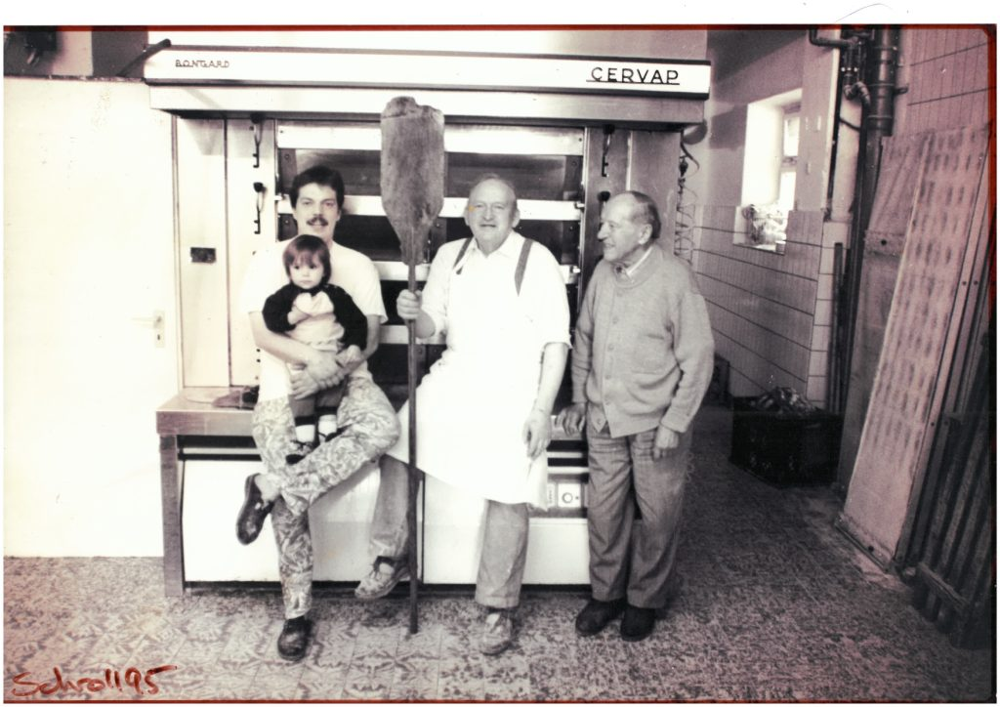
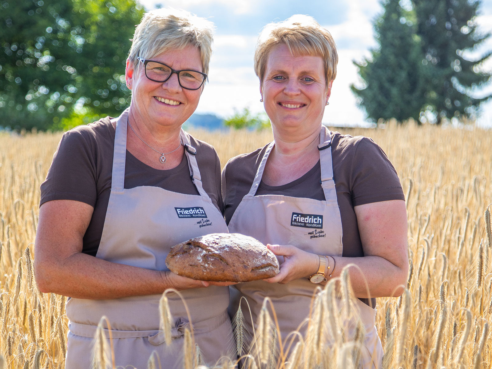

Unsere Geschichte
Über uns
Ein Familienunternehmen seit ca. 150 Jahren — vom Odenwald für den Odenwald.

Familiäres Traditionsunternehmen
Seit ca. 150 Jahren mit Liebe gebacken
Wilhelm Steinmetz gründete die Bäckerei Ende des 19. Jahrhunderts in Brensbach im Odenwald. Seitdem ist der Betrieb fest in der Region verwurzelt und in Familienhand geblieben.
1992 übernahm Reiner Friedrich die Betriebsführung und erweiterte das Unternehmen. 2008 wurde die Filiale in Reichelsheim neu eröffnet. 2017 stiegen Friedrichs Tochter Lisa und ihr Mann in das Unternehmen ein — und sichern so die Fortsetzung der Familientradition.
Vielen Dank für Ihr Interesse an unseren Backwaren und Produkten. Wir sind ein Familienunternehmen seit ca. 150 Jahren und legen seither Wert auf handgefertigte, traditionell hergestellte Produkte, die durch ihren natürlichen, frischen Geschmack begeistern.
Unser Handwerk
Was uns ausmacht
Eigenes Getreide
Zur Herstellung unserer Backwaren nutzen wir unser eigens angebautes Getreide. Gemeinsam mit regionalen Mühlen verarbeiten wir es zu feinstem Mehl.
3-Stufen-Sauerteig
Unsere Brote werden mit einem aufwendigen 3-Stufen-Sauerteig hergestellt. Diese traditionelle Methode sorgt für unvergleichlichen Geschmack und lange Frische.
Handarbeit
Jede einzelne Brezel wird von Hand geflochten. Wir verbinden traditionelle Handwerkstechniken mit modernen Verfahren — für Qualität, die man schmeckt.
Ausbildungsbetrieb
Seit über 30 Jahren Ausbildungsbetrieb
Seit mehr als 30 Jahren bilden wir in unserer Bäckerei den Nachwuchs aus. Als Ausbildungsbetrieb geben wir unser Wissen und unsere Leidenschaft für das Bäckerhandwerk an die nächste Generation weiter.
Die zentrale Produktionsstätte in Brensbach beliefert alle Filialen täglich mehrfach mit frischen Produkten. So stellen wir sicher, dass Sie in jeder unserer Filialen die gleiche Qualität und Frische erleben.
Offene Stellen ansehen